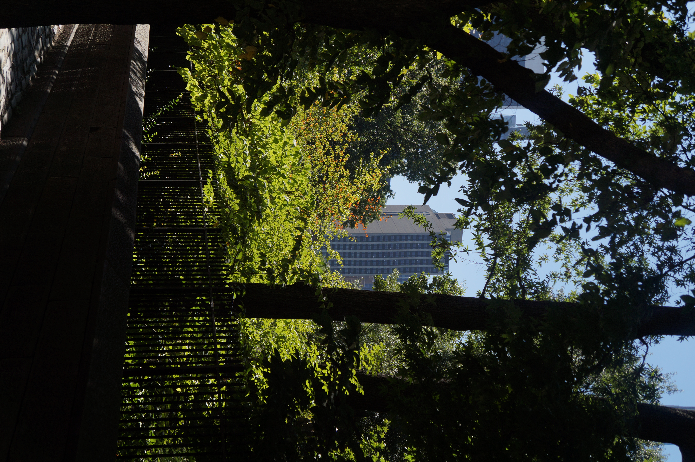

I am interested in exploring different forms of visual media, including graphic design, photography, illustration, and digital art. I decided to take this class because it sounded interesting, and I wanted an opportunity to experiment with different creative approaches and learn new skills. I liked the idea of being able to communicate ideas with others through these different forms of media as well as be able to convey stories through visual works rather than relying entirely on words. I am especially interested in how different elements, such as images, colors, typography, and composition, can come together to create something specifically meaningful. I also enjoy seeing how the same idea can be expressed in completely different ways depending on which specific medium being used.
Most of my experience with visual arts so far has been through digital design, particularly using programs like Photoshop and Illustrator. In previous projects, I had the opportunity to experiment with photo editing, illustrating, and combining different visual elements to create a unique pieces of art. I enjoy the process of starting with an idea and figuring out how to bring it to fruition. I don't have one particular artist or creator who influences my work, but I appreciate seeing the different ways people use art and design to express themselves. Through this class, I hope to expand my creativity, improve my technical skills, and become more comfortable experimenting with different styles and forms of media.

Reading Reflections